Word Embeddings
How machines learned that "refund" and "money back" mean the same thing, the neural network and calculus that make it work, and how embeddings power search, recommendations and RAG in real products.
00Why embeddings?
Unit 2 ended with two failures. Our TF-IDF ticket router could not route "paisa wapas kab milega", and a keyword search for "courier is very slow" returned "portion size very small" because both contain the word "very". Count-based features see words as unrelated symbols. They have no idea that "courier" and "rider" are the same kind of thing.
"You shall know a word by the company it keeps." (J. R. Firth, 1957). Words that appear in similar contexts have similar meanings. "Biryani" and "pulao" both appear near "ordered", "spicy", "plate" and "rice". If we learn a vector for each word from the contexts it appears in, similar words end up with similar vectors. This is the distributional hypothesis, and every embedding method in this unit (and every LLM) is built on it.
Embeddings are one of the most reused ideas in industry ML. The same technique that learns word vectors from sentences learns product vectors from shopping sessions, song vectors from playlists and listing vectors from click sequences. If you understand this unit, you understand the core of modern search and recommendation systems.
01Word vectors: meaning as geometry
A word embedding is a dense vector of typically 50–300 numbers per word, learned from data. Unlike one-hot vectors, the numbers are not hand-assigned, and the position of a word in this space carries meaning.
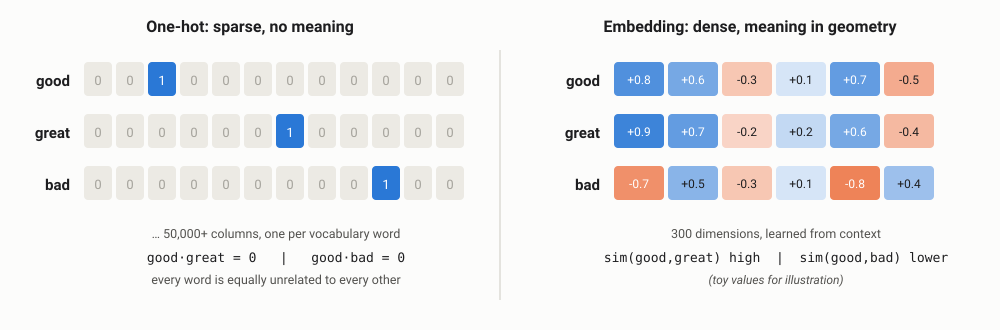
Here are real GloVe vectors (50 numbers each) squeezed into 2 dimensions with PCA. No one told the model which words are foods, cities or emotions:
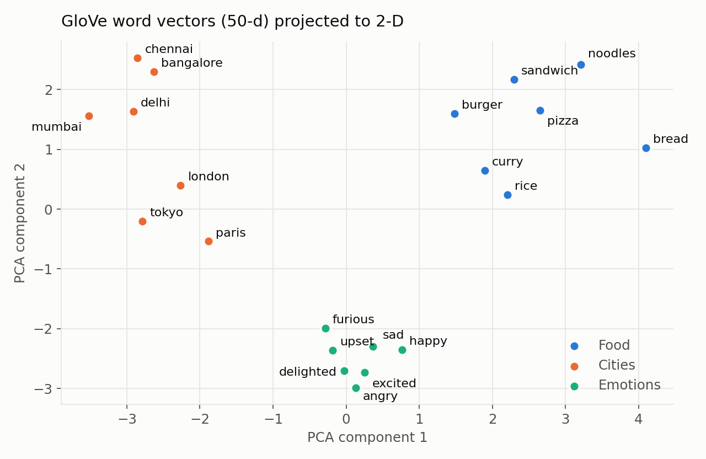
Similarity between two word vectors is measured with cosine similarity: the cosine of the angle between them. 1 means the same direction, 0 means unrelated.
cosine(a, b) = (a · b) / (‖a‖ × ‖b‖)
Directions in the space carry meaning too. The "male → female" direction is roughly the same across many word pairs, which is why vector arithmetic like king − man + woman ≈ queen works:
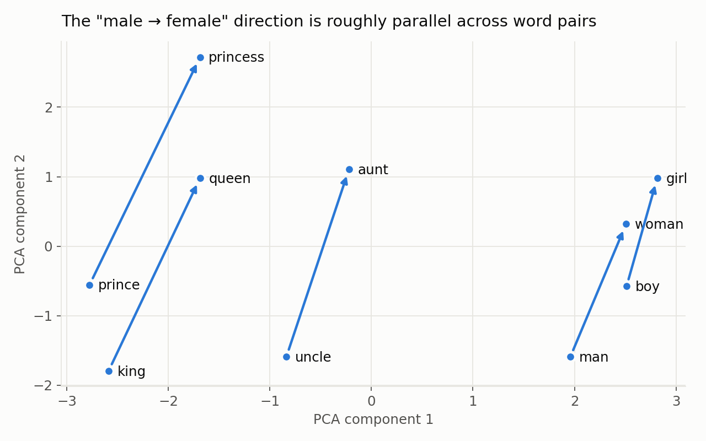
02word2vec: learning vectors by predicting neighbours
word2vec (Mikolov et al., Google, 2013) made embeddings practical at scale. The trick is a fake task: train a tiny neural network to predict words from their neighbours. We do not care about the predictions. We keep the network's weights, and those weights are the word vectors.
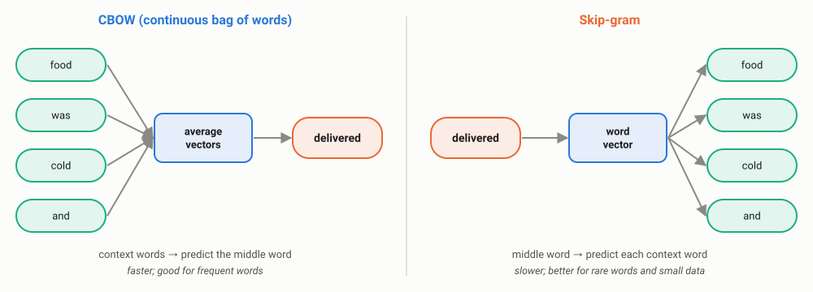
Training slides a window over billions of words of text. For every position, the (center word, context word) pairs become training examples, exactly the skip-grams from Unit 2:
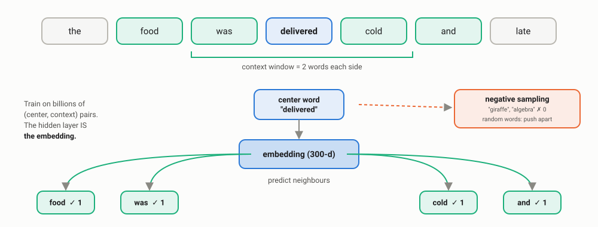
Every time "biryani" and "pulao" appear with the same neighbours, the network nudges their vectors in the same direction. After billions of updates, words used in similar ways end up close together.
word2vec only needs sequences of tokens. Replace words with product IDs and sentences with shopping sessions, and you get product embeddings: products bought in similar contexts end up close together. Airbnb published exactly this in 2018 (listing embeddings trained with skip-gram on user click sessions, used for similar-listing recommendations and search ranking), and the general idea is known as item2vec. The same approach works for songs in playlists, videos in watch sessions and dishes in food orders.
03Negative sampling: the trick that made it fast
To predict a neighbour properly, the network would have to compute a probability for every word in the vocabulary (a softmax) for every training pair. With a 100,000-word vocabulary and billions of pairs, that is far too slow.
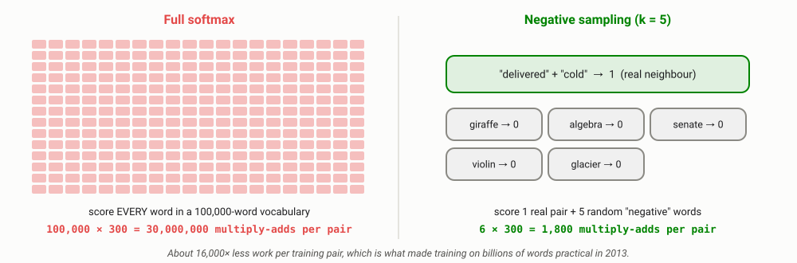
Negative sampling changes the question from "which of 100,000 words is the neighbour?" to "is this pair real or fake?". For each real pair ("delivered", "cold") the model also sees k random words ("giraffe", "algebra"…) labelled as fake. It learns to push real neighbours together and random words apart.
- The word2vec paper recommends k = 5–20 for small datasets and 2–5 for very large ones. Gensim's default is
negative=5. - Negatives are sampled in proportion to word frequency raised to the power 0.75, so very common words ("the") are not sampled too often and rare words get a fair chance.
Negative sampling is everywhere beyond word2vec. Recommendation models are trained on "items the user clicked" versus sampled "items they did not"; modern embedding models for semantic search and RAG are trained with contrastive learning, pulling a question towards its correct answer and away from sampled wrong answers. Choosing good negatives (hard, but truly wrong) is one of the most important practical tricks in training retrieval systems.
04Hands-on with Gensim
Gensim is the standard Python library for classic embeddings. It can download pre-trained vectors and train your own.
A. Use pre-trained GloVe vectors
import gensim.downloader as api
glove = api.load("glove-wiki-gigaword-50") # 400,000 words x 50 dimensions, trained on Wikipedia + news
print(glove["biryani"][:6]) # first 6 of 50 numbers
print([(w, round(s, 2)) for w, s in glove.most_similar("biryani", topn=5)])
print([(w, round(s, 2)) for w, s in glove.most_similar(positive=["king", "woman"], negative=["man"], topn=3)])
print([(w, round(s, 2)) for w, s in glove.most_similar(positive=["paris", "india"], negative=["france"], topn=3)])
print(glove.doesnt_match(["breakfast", "cereal", "dinner", "lunch"]))[-0.555 -0.73682 -1.4234 -0.31928 0.34046 -0.44858]
[('hyderabadi', 0.75), ('biriyani', 0.75), ('udon', 0.73), ('kimchi', 0.73), ('eskişehir', 0.71)]
[('queen', 0.85), ('throne', 0.77), ('prince', 0.76)]
[('delhi', 0.89), ('bombay', 0.82), ('mumbai', 0.81)]
cereal
- Neighbours of "biryani" include "hyderabadi" and the spelling variant "biriyani", plus other dishes (udon, kimchi). The odd one out, "eskişehir", is a Turkish city: embeddings are useful but noisy.
- paris − france + india ≈ delhi: the "capital of" relation is a direction in the space.
- "cereal" is the odd one out among meals: the model has learned categories.
B. Train your own word2vec
import gensim.downloader as api
from gensim.models import Word2Vec
corpus = api.load("text8") # ~17 million words of Wikipedia text
model = Word2Vec(corpus, vector_size=100, window=5, min_count=5,
sg=1, negative=5, workers=2, epochs=1) # sg=1: skip-gram, negative=5: negative sampling
print(f"vocabulary = {len(model.wv):,} words")
for w in ["food", "king", "computer"]:
print(w, "->", [x for x, _ in model.wv.most_similar(w, topn=5)])vocabulary = 71,290 words food -> ['goods', 'dairy', 'meat', 'raw', 'tobacco'] king -> ['prince', 'vii', 'queen', 'crowned', 'elector'] computer -> ['computers', 'hardware', 'computing', 'mainframe', 'graphics']
This trained in 52 seconds on 2 CPU cores. Note "food" → "goods", "tobacco": in Wikipedia, "food" often appears in trade and economics articles. Embeddings reflect the text they were trained on.
C. What happens with too little data
import pandas as pd
from gensim.models import Word2Vec
tickets = [t.split() for t in pd.read_csv("support_tickets.csv")["text"]] # only 120 short tickets
w2v = Word2Vec(tickets, vector_size=50, window=3, min_count=1, sg=1, epochs=50, seed=1, workers=1)
print("word2vec refund ->", [w for w, _ in w2v.wv.most_similar("refund", topn=5)])word2vec refund -> ['not', 'my', 'the', 'to', 'order']
With 120 tickets, the "nearest words" to refund are just the most common words. Embeddings need millions of words to be meaningful. In industry, you almost always start from pre-trained vectors (or a pre-trained model) and only train your own when you have a large domain corpus, for example years of support chats, medical notes or legal documents.
05Word vectors 2: GloVe and fastText
GloVe: global co-occurrence statistics
word2vec learns from one window at a time. GloVe (Global Vectors; Pennington, Socher & Manning, Stanford, 2014) first counts how often every pair of words co-occurs across the whole corpus, then learns vectors whose dot products match those statistics. The key insight is that ratios of co-occurrence probabilities carry meaning:
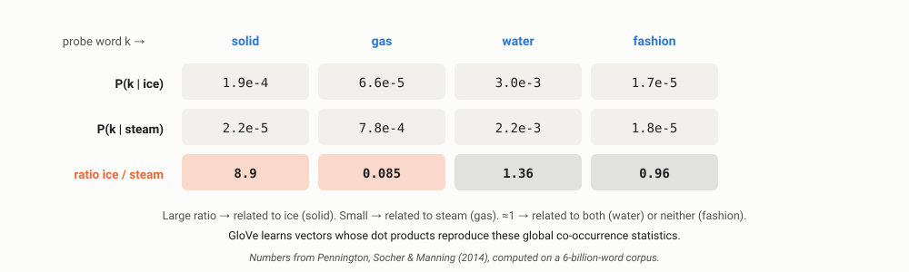
fastText: vectors for words you have never seen
fastText (Facebook AI Research, 2016–17) represents each word as a bag of character n-grams (the idea from Unit 2). A word's vector is the sum of its pieces' vectors, so it can build a vector for a misspelled or brand-new word.
import gensim.downloader as api
from gensim.models import FastText
ft = FastText(api.load("text8"), vector_size=100, window=5, min_count=5, epochs=1, workers=2)
for typo in ["delivry", "restaurnt", "biriyani"]:
print(f"{typo:<10} in vocab? {typo in ft.wv.key_to_index!s:<5} nearest ->", [w for w, _ in ft.wv.most_similar(typo, topn=3)])delivry in vocab? False nearest -> ['dessert', 'dessau', 'deli'] restaurnt in vocab? False nearest -> ['restaurant', 'restart', 'restraint'] biriyani in vocab? False nearest -> ['birka', 'gemara', 'birla']
An honest result: "restaurnt" works perfectly. "delivry" gets a vector (word2vec would raise an error) but the neighbours are only spelling look-alikes. "biriyani" fails because Wikipedia text has almost no Indian food vocabulary. Subwords help with typos; they do not replace domain data.
| word2vec | GloVe | fastText | |
|---|---|---|---|
| Learns from | Local context windows | Global co-occurrence counts | Local windows + character n-grams |
| Unseen / misspelled words | No vector | No vector | Builds one from pieces |
| Pre-trained vectors | Google News: 3M words × 300d | Wikipedia, Common Crawl, Twitter | 157 languages, including Hindi, Marathi, Tamil |
| Best for | Custom items (products, songs), large corpora | Good general-purpose English vectors | Typos, rich morphology, Indian languages |
06Word senses and the limits of static embeddings
word2vec, GloVe and fastText are static: each word gets exactly one vector, whatever the sentence. Real GloVe output shows the consequences:
import gensim.downloader as api
glove = api.load("glove-wiki-gigaword-50")
print("good~great:", round(float(glove.similarity("good", "great")), 2),
" good~bad:", round(float(glove.similarity("good", "bad")), 2))
print("bank ->", [w for w, _ in glove.most_similar("bank", topn=5)])
print("python ->", [w for w, _ in glove.most_similar("python", topn=5)])
print("man:doctor :: woman:?", [w for w, _ in glove.most_similar(positive=["doctor", "woman"], negative=["man"], topn=3)])good~great: 0.8 good~bad: 0.8 bank -> ['banks', 'securities', 'banking', 'investment', 'exchange'] python -> ['reticulated', 'spamalot', 'php', 'owl', 'mouse'] man:doctor :: woman:? ['nurse', 'child', 'pregnant']
Antonyms look similar
"good" is as close to "bad" as to "great" (0.8 each): opposites appear in the same contexts. A problem for sentiment!
One vector per word
"bank" is only financial; the river sense is lost. "python" mixes the snake (reticulated), Monty Python (spamalot) and the language (php).
Learned bias
man : doctor :: woman : nurse. Embeddings absorb the stereotypes in their training text.
If a resume-screening or ad-targeting system uses biased embeddings, it can quietly rank candidates or show job ads differently by gender. In 2018 Reuters reported that Amazon scrapped an experimental ML recruiting tool after it learned to penalise resumes containing the word "women's". Teams now test models for bias before launch, and regulators increasingly expect it.
The real solution to word senses is contextual embeddings: models like BERT and GPT (Unit 5) give "bank" a different vector in "river bank" and "bank loan". That is why static embeddings are now used mainly where they are cheap and good enough (features for small models, recommendations, on-device apps), and contextual models are used for understanding.
07Word window classification
How do we use embeddings for a task like named entity recognition? Classify each word using a window of vectors around it: the word itself plus its neighbours, concatenated into one input vector.
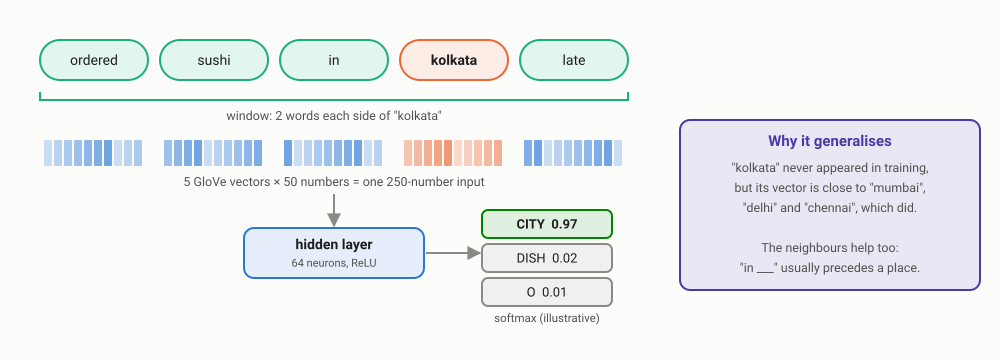
import numpy as np, gensim.downloader as api
from sklearn.neural_network import MLPClassifier
glove = api.load("glove-wiki-gigaword-50")
PAD = np.zeros(50)
def windows(tokens, size=2):
"""For each word: concatenate vectors of [w-2, w-1, w, w+1, w+2] -> 250 numbers."""
vec = lambda w: glove[w] if w in glove else PAD
padded = ["<pad>"] * size + tokens + ["<pad>"] * size
return [np.concatenate([vec(w) for w in padded[i:i + 2*size + 1]]) for i in range(len(tokens))]
# Tiny labelled training set: DISH, CITY or O (other)
train = [
("i ordered biryani in pune", "O O DISH O CITY"),
("the pizza was cold in mumbai", "O DISH O O O CITY"),
("delivery to delhi took an hour", "O O CITY O O O"),
("paneer was great", "DISH O O"),
("best burger in bangalore", "O DISH O CITY"),
("my noodles never arrived in chennai", "O DISH O O O CITY"),
("please send the curry fast", "O O O DISH O"),
("we live in hyderabad and love dosa", "O O O CITY O O DISH"),
]
X, y = [], []
for sent, tags in train:
X += windows(sent.split()); y += tags.split()
clf = MLPClassifier(hidden_layer_sizes=(64,), max_iter=2000, random_state=0).fit(X, y)
# Words the model has NEVER seen as training examples
for sent in ["i ordered sushi in kolkata", "the lasagna reached jaipur late"]:
tokens = sent.split()
print(" ".join(f"{t}/{tag}" for t, tag in zip(tokens, clf.predict(windows(tokens)))))i/O ordered/O sushi/DISH in/O kolkata/CITY the/O lasagna/DISH reached/O jaipur/CITY late/O
From just 8 training sentences, the model correctly tags sushi, lasagna, Kolkata and Jaipur, none of which it was trained on. With TF-IDF or one-hot features this is impossible: an unseen word is just an unknown column. With embeddings, "sushi" arrives already close to "biryani" and "pizza". This is transfer learning: knowledge from billions of words of pre-training reused for a tiny labelled task, and it is the same principle that makes BERT and LLMs so useful.
08Neural networks: a quick industry refresher
The MLPClassifier above is a small feed-forward neural network. Every model from here on (RNNs, Transformers, LLMs) is built from the same pieces.
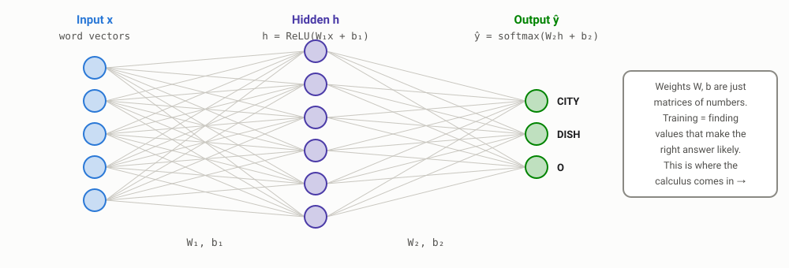
| Piece | What it does | In our window classifier |
|---|---|---|
| Weights W and bias b | Matrices of learned numbers; a layer computes Wx + b | W₁ is 64 × 250: 16,000 numbers |
| Activation (ReLU) | Adds non-linearity: max(0, x). Without it, stacked layers collapse into one linear model | Lets the model combine "in ___" with "looks like a city" |
| Softmax | Turns raw scores into probabilities that sum to 1 | P(CITY), P(DISH), P(O) |
| Loss (cross-entropy) | How wrong the prediction was: −log P(correct class) | Low when P(CITY) is high for "kolkata" |
09Matrix calculus and backpropagation
Training means adjusting every weight a little in the direction that reduces the loss. To know that direction we need the gradient: the derivative of the loss with respect to every weight. Backpropagation computes all of them efficiently by applying the chain rule backwards through the network, reusing intermediate results.
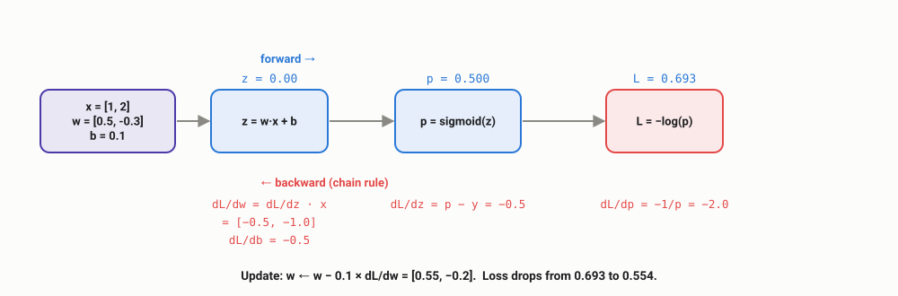
import numpy as np
x, y = np.array([1.0, 2.0]), 1.0 # one training example, true label = 1
w, b = np.array([0.5, -0.3]), 0.1 # current weights
sigmoid = lambda z: 1 / (1 + np.exp(-z))
def loss(w, b):
p = sigmoid(w @ x + b)
return -np.log(p) if y == 1 else -np.log(1 - p)
# forward pass
z = w @ x + b; p = sigmoid(z)
print(f"forward : z={z:.2f} p={p:.3f} loss={loss(w, b):.3f}")
# backward pass (chain rule): dL/dz = p - y, dL/dw = dL/dz * x, dL/db = dL/dz
dz = p - y
dw, db = dz * x, dz
print(f"backward: dL/dw={dw} dL/db={db:.2f}")
# sanity check with a numerical gradient (what every framework's tests do)
eps = 1e-6
num_dw0 = (loss(w + [eps, 0], b) - loss(w - [eps, 0], b)) / (2 * eps)
print(f"check : numerical dL/dw0={num_dw0:.4f}")
# one gradient-descent step
lr = 0.1
w, b = w - lr * dw, b - lr * db
print(f"update : w={w} b={b:.2f} new loss={loss(w, b):.3f}")forward : z=0.00 p=0.500 loss=0.693 backward: dL/dw=[-0.5 -1. ] dL/db=-0.50 check : numerical dL/dw0=-0.5000 update : w=[ 0.55 -0.2 ] b=0.15 new loss=0.554
The matrix view
For a whole layer h = Wx + b, the same chain rule gives compact matrix formulas: if δ = ∂L/∂h is the gradient arriving from above, then ∂L/∂W = δ xᵀ, ∂L/∂b = δ and ∂L/∂x = Wᵀ δ (which is passed further back). That last term is how the gradient reaches the word vectors themselves, which is exactly how word2vec learns its embeddings.
PyTorch, TensorFlow and JAX compute gradients automatically (autograd). Engineers do not derive gradients for work. But understanding backprop is how you debug real training problems: a loss that becomes NaN (exploding gradients), a model that stops learning (vanishing gradients, the key problem of RNNs in Unit 4), a learning rate that is too high, or a layer accidentally frozen. The numerical gradient check in the code above is also how framework developers test their own gradient code.
10Linguistic structure: dependency parsing
A dependency parse shows the grammatical structure of a sentence as arrows from each word to the word it depends on (its head), labelled with the relation. Here is spaCy's real parse of a mixed review:
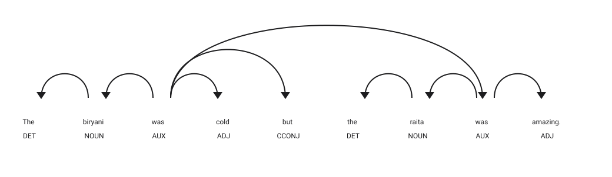
import spacy
nlp = spacy.load("en_core_web_sm")
doc = nlp("The biryani was cold but the raita was amazing.")
for t in doc:
print(f"{t.text:<8} {t.dep_:<7} head={t.head.text}")
# aspect-opinion pairs: noun subject <- verb "be" -> adjective complement
pairs = []
for tok in doc:
if tok.dep_ == "acomp":
subj = [c for c in tok.head.children if c.dep_ == "nsubj"]
if subj:
pairs.append((subj[0].text, tok.text))
print(pairs)The det head=biryani
biryani nsubj head=was
was ROOT head=was
cold acomp head=was
but cc head=was
the det head=raita
raita nsubj head=was
was conj head=was
amazing acomp head=was
. punct head=was
[('biryani', 'cold'), ('raita', 'amazing')]
A bag-of-words model sees one review with "cold" and "amazing" and calls it mixed. The parse tells us which dish got which opinion: the kitchen needs to fix the biryani, not the raita. This is aspect-based sentiment from Unit 1, now with real structure behind it.
Fast, accurate parsers became practical when Chen & Manning (2014) fed word embeddings into a small neural network that predicts parsing actions one step at a time, which is the same window-and-neural-network recipe as section 07. spaCy's parser follows this transition-based approach. In industry, dependency parses are used for aspect extraction, relation extraction ("Company A acquired Company B"), question understanding and rule-based information extraction on top of statistical models.
11Embeddings in industry: semantic search
Back to our failed keyword search. Represent each ticket as the average of its word vectors, and search by cosine similarity instead of shared words:
import numpy as np, pandas as pd, gensim.downloader as api
glove = api.load("glove-wiki-gigaword-50")
tickets = pd.read_csv("support_tickets.csv")["text"].tolist()
def embed(text):
"""Sentence vector = average of its word vectors (unknown words are skipped)."""
vecs = [glove[w] for w in text.lower().replace(",", " ").split() if w in glove]
v = np.mean(vecs, axis=0)
return v / np.linalg.norm(v)
T = np.array([embed(t) for t in tickets]) # in production: stored in a vector index
for query in ["money back", "reimbursement pending", "courier is very slow"]:
scores = T @ embed(query) # cosine similarity with every ticket
top = scores.argsort()[::-1][:3]
print(f"\n{query!r}")
for i in top:
print(f" {scores[i]:.2f} {tickets[i]}")'money back' 0.92 i want my money back 0.92 my account got blocked 0.92 payment done still asking to pay again 'reimbursement pending' 0.76 amount debited, payment pending since morning 0.69 payment failed but amount debited 0.67 partial refund is wrong 'courier is very slow' 0.89 why is my order taking so long 0.89 rider says he is near but not here 0.87 order shows delivered but i did not get it
- "courier is very slow" now finds three delivery tickets that share no words with the query. BM25 returned "portion size very small".
- "reimbursement pending" finds payment and refund tickets; "reimbursement" never appears in the data.
- "money back" also returns "my account got blocked" at 0.92. Averaging lets common words like "my" dominate short texts. This is why production systems use sentence-embedding models trained for search (Unit 5), not averaged word vectors.
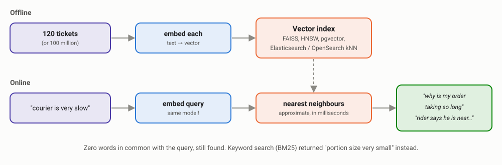
T @ embed(query), which would be too slow over millions of documents.In Unit 2 the inverted index made keyword search fast. Vector indexes do the same for embeddings, using approximate nearest-neighbour algorithms such as HNSW (a navigable graph of vectors). Popular options: Meta's open-source FAISS library, dedicated vector databases, pgvector inside PostgreSQL, and the kNN vector search built into Elasticsearch and OpenSearch. Most production search and RAG systems now run hybrid search: BM25 for exact terms plus vectors for meaning.
Where else embeddings are used
Recommendations
Item embeddings from sessions: "customers who ordered this also ordered…".
Features for small models
Embedding features help classifiers generalise from few labels, as in section 07.
Clustering & deduplication
Group thousands of tickets into themes; merge near-duplicate products or complaints.
RAG chatbots
Retrieve the right policy paragraph to answer a customer's question (Unit 5).
12Embeddings in production
| Concern | What it means in practice |
|---|---|
| Memory | 400,000 words × 300 dimensions × 4 bytes ≈ 480 MB. Google News word2vec (3M × 300) ≈ 3.6 GB. Teams trim the vocabulary, reduce dimensions or quantise vectors. |
| Domain mismatch | Wikipedia vectors do not know "biriyani", "UPI" or your product names. Fine-tune or train on domain text when you have millions of words; otherwise use fastText or subword models. |
| Out-of-vocabulary words | Decide what happens to unknown words (skip, zero vector, subwords) and monitor how often it happens. |
| Model versioning | Vectors from two different models are not comparable. Change the embedding model and you must re-embed every document in the index. |
| Evaluation | Analogy puzzles (intrinsic tests) are fun but do not predict business value. Measure on your task (extrinsic): did search clicks, routing accuracy or recommendation conversions improve? |
| Bias | Test for stereotypes before using embeddings in decisions about people (hiring, lending, ads). |
A practical decision rule used by many teams: start with keyword search or TF-IDF (Unit 2). Add embeddings when users search with different words than your documents use, or when you need to generalise from few labels. Move to contextual models (Unit 5) when meaning depends on the whole sentence. Each step costs more compute, so only take it when the metric says it is worth it.
13Try it yourself
In Google Colab:
!pip install gensim spacy scikit-learn pandas
!python -m spacy download en_core_web_smUpload support_tickets.csv from Unit 2 and try:
- Find three analogies that work in GloVe and three that fail. Why do they fail?
- Add "dish" words from your city to the window classifier test sentences. Which does it get right?
- Improve the semantic search by ignoring very common words (the, my, is) when averaging. Does "money back" stop returning "account got blocked"?
- Parse five of your own restaurant reviews and extract (aspect, opinion) pairs. Where does the simple rule break?
Discussion questions
1. Why can a model trained on 8 sentences recognise "kolkata" as a city?
Because its input is a pre-trained GloVe vector learned from billions of words, where "kolkata" is already close to "mumbai", "delhi" and "chennai". The small classifier only has to learn "this region of the space means CITY". This is transfer learning.
2. "good" and "bad" have similarity 0.8 in GloVe. Why, and what does it mean for a sentiment model?
Opposites appear in the same contexts ("the food was good/bad"), so distributional methods place them close together. A sentiment model built only on static embeddings will struggle to separate them; it needs labelled training data or contextual models.
3. Your company switches from GloVe to a newer embedding model. What has to happen to the vector index?
Every document must be re-embedded with the new model and the index rebuilt, because vectors from different models live in different spaces and cannot be compared. Teams plan this as a migration, often running both indexes in parallel for a while.
4. How could a food-delivery app use word2vec without any text at all?
Treat each customer's order history as a "sentence" of dish or restaurant IDs and train skip-gram on it. Dishes ordered in similar contexts get similar vectors, powering "you may also like" recommendations and similar-restaurant suggestions.
5. Why is negative sampling needed, and where else is the idea used?
A full softmax over a large vocabulary is too expensive per training pair (30 million multiply-adds vs 1,800 with k = 5 for a 100,000-word, 300-dimension model). The idea of contrasting real pairs with sampled negatives is used in recommendation training and in the contrastive training of modern retrieval and RAG embedding models.
6. You will never write backprop by hand at work. Why learn it?
To debug training: NaN losses, exploding or vanishing gradients, frozen layers, bad learning rates. It also explains why RNNs struggle with long sequences (Unit 4) and how gradients reach the embedding layer.
14Key takeaways
- Embeddings turn words into dense vectors where similar meaning = nearby vectors, learned from context (the distributional hypothesis).
- word2vec learns vectors via a fake prediction task; negative sampling makes it about 16,000× cheaper per training pair.
- GloVe learns from global co-occurrence ratios; fastText adds character n-grams for typos and unseen words.
- Static embeddings have one vector per word: no word senses, antonyms look similar, and they absorb bias.
- Pre-trained embeddings enable transfer learning: 8 labelled sentences were enough to tag unseen dishes and cities.
- Backpropagation is the chain rule applied backwards; frameworks automate it, but understanding it is how you debug training.
- Dependency parsing tells you which opinion belongs to which aspect.
- In industry, embeddings power semantic search (with vector indexes), recommendations and RAG, usually alongside BM25.